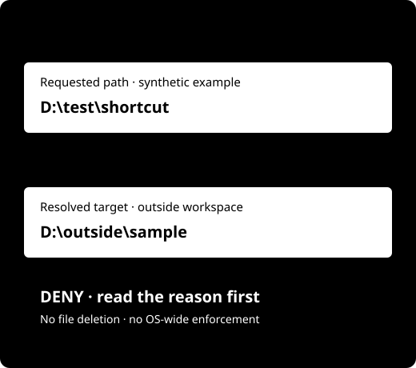

Windows RC4 · Free technical evaluation
Check the target.
Before the command.
See the requested path, its resolved target, affected files and bytes, and the reason for a policy decision.
For Windows users evaluating file workflows with Codex or Claude Code. Submitted destructive commands are never executed. A junction can point beyond a workspace even when its name looks safe.
Download Windows evaluation ZIPAnonymous download · Python 3.12 or newer required
Evaluation/testing only · No production or commercial-use rights

Verify the download first
arche-shield-0.1.0-rc4-eval2-windows.zip · 58,943 bytes · Release 0.1.0-rc4-eval2
The embedded product version is 0.1.0. GitHub's automatic “Source code” archive is not the runnable package.
Evaluation ZIP SHA256
49d1083903660b509d6e6f73630ccccf3b0ee7f94f1778e5f25b00ffd57bbc53
Start with synthetic files
No customer or work files are needed.
Use a new folder and read the inspection result.
Check the ZIP, then extract it
Windows Start → PowerShell. Replace the example path with the downloaded file's actual path. Compare all 64 SHA256 characters above. Stop if they differ.
Get-FileHash -Algorithm SHA256 -LiteralPath 'C:\Path\To\arche-shield-0.1.0-rc4-eval2-windows.zip'File Explorer → right-click ZIP → Extract All → choose a new folder. Do not run inside the ZIP or overwrite an older extraction.
Check Python and the package
Start → Command Prompt →
python --versionorpy -3 --version. Require 3.12 or newer. If absent, review the official Python instructions. No automatic installation or administrator elevation is requested.Copy the extracted folder address and replace the example below:
cd /d "C:\Path\To\ExtractedFolder" VERIFY.cmd SHIELD.cmd --help SHIELD.cmd --versionExpected:
verification: PASS, usage text and product version0.1.0.Run and read the synthetic demo
TRY_DEMO.cmdExpected:
demo: PASS,synthetic_only: true,submitted_commands_executed: false. Only newly created synthetic demo files are inspected; demo files and audit records remain.Default
C:\Usersprotection may correctly return DENY / exit code 2. Read the reason; do not weaken system protection. The demo's test policy does not grant rights for other workspaces.
Your next step
Selections stay in this page only. They are not stored or sent and do not prove installation success.
If the result differs
PYTHON_3_12_REQUIRED
Check the version. If installation is needed, review the official Python instructions yourself. This page and launcher do not automatically change PATH, system settings or privileges.
PACKAGE_HASH_MISMATCH or checksum mismatch
Stop. Preserve the current folder, download again from the public release and compare in a new folder. Do not turn off security or lower policy protections.
DENY, exit code 2 or Git UNKNOWN
DENY is a policy result. Read the reason: protected roots, links outside a workspace, file/byte limits or Git metadata. UNKNOWN is not permission. Do not execute the proposed operation.
Exit code 3 or another error
Preserve the version and error code. It may be a configuration, audit or integrity error. Reproduce with synthetic files and report the sanitized result. Do not attach customer files, personal paths or credentials.
Evaluation scope and known limits
Evaluation/testing only
No production, commercial operation, resale, redistribution, white-label or team commercial-use rights. Seven days is a market measurement window, not a forced software expiry.
Use synthetic/test workspaces. Real-user restore, hooks and live providers are OFF.
Advisory preflight boundaries
No OS-wide enforcement. ALLOW is advisory, not execution authority. Independent RC4 security audit: NOT_RUN. AUDIT016: INCOMPLETE. Heuristic, TOCTOU and privilege-dependent detection limitations remain.
Unsigned evaluation artifact. Local mock is NOT_EXTERNAL_TRUST. Coherent whole-DB plus mock rollback is NOT_PROTECTED; no full restore guarantee. Cached pages and downloaded copies may remain after unpublishing.
Evaluation terms · Known limitations · Version preservation and rollback
After your first inspection
Report installation, first inspection and one concrete useful situation separately. A download is not a successful installation, buying intent or revenue.
Open the structured evaluation formGitHub sign-in required · Public issue: no personal data, customer files or credentials
Optional support interest is not an order, contract, payment or software license. Payments are OFF.
Commercial / production / team-use inquiry requires a separate Owner decision; inquiry does not grant usage rights.